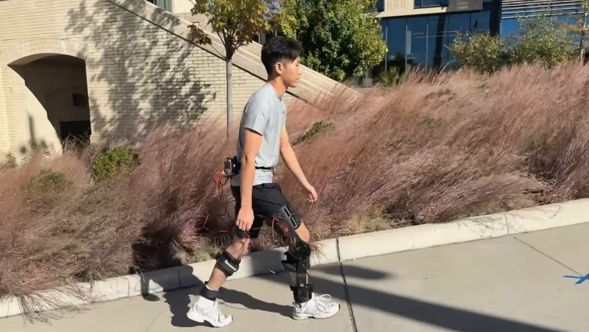
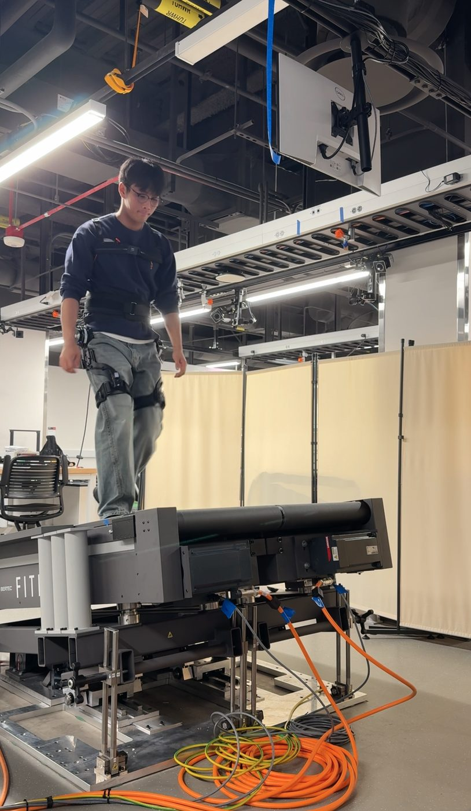
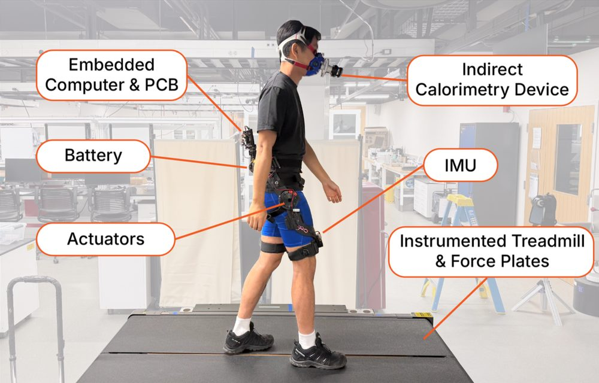
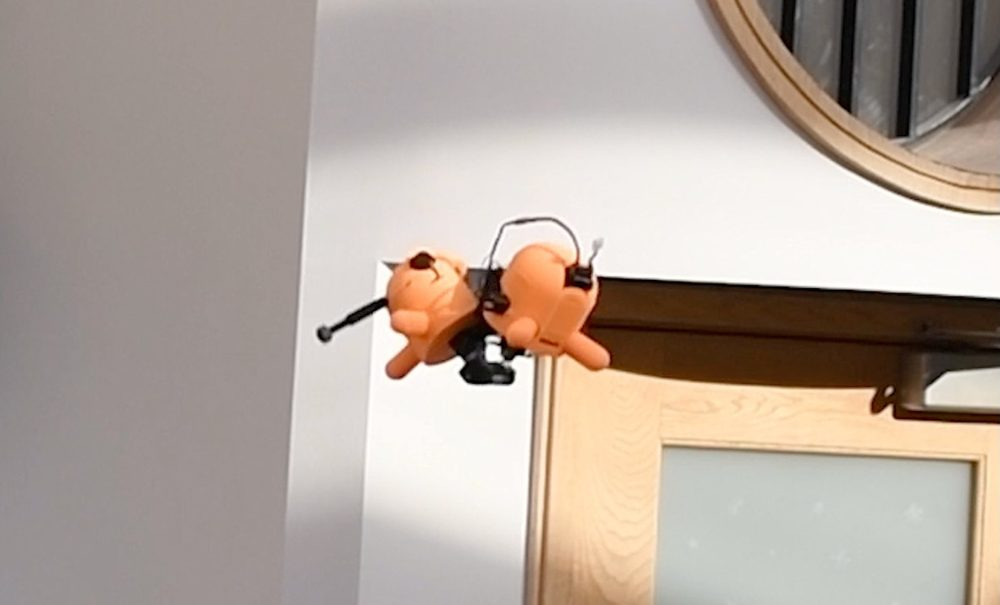
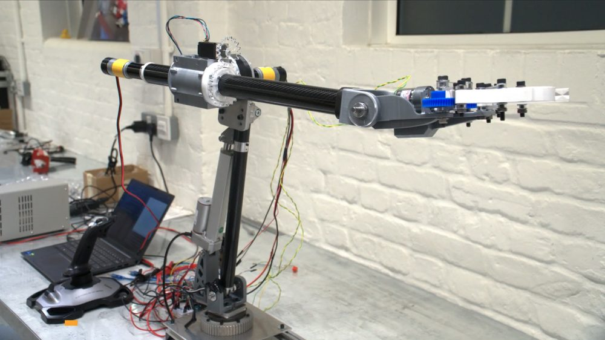

Co-first author
Soft Impedance Learning for Knee Exoskeleton
Learning a versatile, impedance-law-driven controller for a knee exoskeleton in simulation.



My name is Itak Choi. I am interested in assisting humans through AI and robotics technology.
I'm a Fulbright scholar and M.S. student in Mechanical Engineering at Carnegie Mellon University, advised by Professor Inseung Kang in the MetaMobility Lab. Before CMU, I studied mechanical engineering at University College London, leading the robotic arm team for the UCL Mars Rover Team.
I train wearable robot controllers in simulation, deploy them on real devices, and run human experiments. I have broad experience in robot learning, control, and human biomechanics.



First author, under review
Building exoskeleton controllers needs extensive data collection and experiments. We made a simulated model imitate human motion and trained exoskeleton controllers on top of it.

Co-first author
Learning a versatile, impedance-law-driven controller for a knee exoskeleton in simulation.

Co-first author, under review
Spin-off paper from a course project! Inspired by cats, we built a robot that always lands feet-down from any roll angle in 0.6 seconds. I developed the robot's software and simulation-trained controller.

Led the design and control of a 5-DOF robot arm for a Mars rover competing in global competitions.